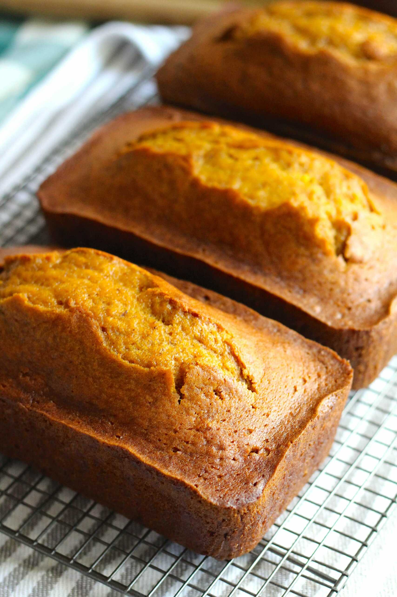

This pumpkin bread is a great old Maine recipe, moist and full of warm spices. The bread actually tastes even better the day after it is baked. It’s easy to make with canned pumpkin and perfect for holiday gift-giving!
Gather the ingredients. Preheat the oven to 350 degrees F (175 degrees C). Grease and flour two 9x5-inch loaf pans.
Step 2Whisk flour, baking soda, salt, cinnamon, nutmeg, cloves, and ginger together in a large bowl.
Step 3Whisk pumpkin purée, eggs, oil, water, and sugar together in a separate large bowl until smooth and well combined.
Step 4Stir the flour mixture into the pumpkin mixture just until no dry streaks remain; do not overmix.
Step 5Divide the batter evenly between the prepared loaf pans.
Step 6Bake in the preheated oven until a toothpick inserted into the center of each loaf comes out clean or with a few moist crumbs, about 50 minutes
Step 7Cool the loaves in their pans for 10 minutes. Run a thin knife around the edges, then turn the loaves onto a wire rack to cool completely before slicing or wrapping.
Home